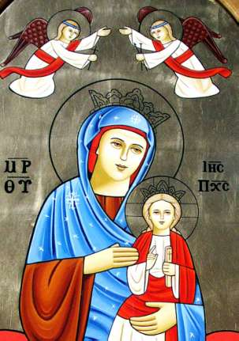

2 أنطونيوس األنبا العظيم القديس دير بكريفيلباخ بألوانيا الغبطه صاحب يهنئ والقداسه الثالث شنودة البابا و أ ا الكنيسه حبار أل جالء الكهنت اآلباء وجويع والشعب والشواهست الورقسيت الكرازة جويع فى 2012 الميال بالعام الدديد د المديد الميالد وعيد بخير جويعا وحضراتكن عام وكل Das St. Antonius Kloster in Kröffelbach gratuliert unserem Heiligen Vater, Papst Shenouda III, den ehrwürdigen Bischöfen, allen Priestern, Diakonen und Mitgliedern der Gemeinden im gesamten Patriarchat des Hl. Apostels Markus und den Freunden unserer Kirche zum Neuen Jahr des Herrn 2012 und wünscht ihnen den Segen der Weihnacht. Möge der allmächtige Gott Ihnen allen seinen reichen Segen und gute Gesundheit geben.
St. Markus · 2012 · Deutsch
Segenswünsche zum Neuen Jahr
Ausgabe 1 · Seite 2
